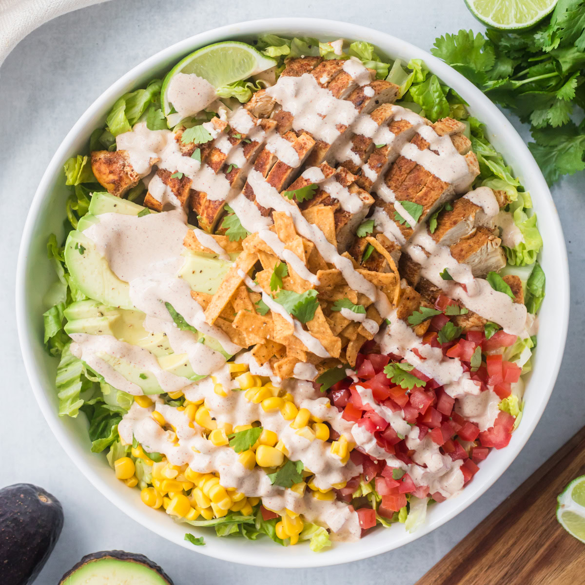

Home
Santa Fe Chicken Salad

Description
Servings: 4 // Prep Time: 10 minutes // Cook Time: 20 minutes // Total Time: 30 minutes
Refreshing and hearty at the same time, this Santa Fe area inspired salad is the perfect dish for a summer lunch or dinner! Season your chicken with wonderfully smokey spices to add a unique blend of flavors not found in your run-of-the-mill salad. Tomatoes, corn, avocado and crunchy tortilla strips create a satisfying mouth feel with each bite. And just you wait until you try the absolutely creamy and zingy dressing that's so easy to make.
Make the chicken and dressing ahead of time, and perhaps in bulk, so you can just throw this recipe together. Colder chicken tends to go better with a salad anyway! The chicken and dressing can hold up in the fridge for up to a week, making this the perfect meal prep recipe.
Ingredients
For the salad
- 1 pound chicken breast
- 3 teaspoons taco seasoning (homemade or store bought)
- 4 cups romaine lettuce, chopped
- 1 cup cherry tomatoes, chopped
- 1 cup thawed frozen or canned corn, drained
- 1 avocado, sliced
For the dressing
- 1/2 cup mayonnaise
- 1 tablespoon lime juice
- 1 tablespoon water
- 1/2 teaspoon chili powder
- 1/4 teaspoon cumin
- 1/2 teaspoon onion powder
- Salt and pepper, to taste
Optional toppings
- Fresh cilantro
- Lime wedges
- Tortilla strips
- Cojita cheese
Steps
- Season the chicken breast with salt and pepper, the sprinkle with taco seasoning.
- Preheat either a grill or skillet with olive oil over medium heat. Cook the chicken breast to an internal temperature of 165 degrees; about 8 minutes each side. Remove from heat, cover and let rest for about 10 minutes.
- Place all dressing ingredients in a small jar or bottle and shake until combined.
- Place lettuce, cherry tomatoes, corn, and avocado in a large bowl. Drizzle desired amount of dressing and toss together.
- Slice chicken. Serve salad in bowls and top with chicken. Add optional toppings and enjoy!
Check Out These Other Recipes
Home